学习不走弯路，关注公众号 回复「学习路线」，获取mall项目专属学习路线！
Elasticsearch官方已支持SQL查询，用起来贼方便！
平时使用Elasticsearch的时候，偶尔会在Kibana中使用Query DSL来查询数据。每次要用到Query DSL时都基本忘光了，需要重新在回顾一遍，最近发现Elasticsearch已经支持SQL查询了（6.3版本以后），整理了下其用法，希望对大家有所帮助！
简介
Elasticsearch SQL是一个X-Pack组件，它允许针对Elasticsearch实时执行类似SQL的查询。无论使用REST接口，命令行还是JDBC，任何客户端都可以使用SQL对Elasticsearch中的数据进行原生搜索和聚合数据。可以将Elasticsearch SQL看作是一种翻译器，它可以将SQL翻译成Query DSL。
Elasticsearch SQL具有如下特性：
- 原生支持：Elasticsearch SQL是专门为Elasticsearch打造的。
- 没有额外的零件：无需其他硬件，处理器，运行环境或依赖库即可查询Elasticsearch，Elasticsearch SQL直接在Elasticsearch内部运行。
- 轻巧高效：Elasticsearch SQL并未抽象化其搜索功能，相反的它拥抱并接受了SQL来实现全文搜索，以简洁的方式实时运行全文搜索。
学前准备
学习之前我们需要先对Elasticsearch有所了解，并安装好Elasticsearch和Kibana，这里安装的是7.6.2版本，具体可以参考《Elasticsearch快速入门，掌握这些刚刚好！》。
安装完成后在Kibana中导入测试数据，数据地址： https://github.com/macrozheng/mall-learning/blob/master/document/json/accounts.json
直接在Kibana的Dev Tools中运行如下命令即可：
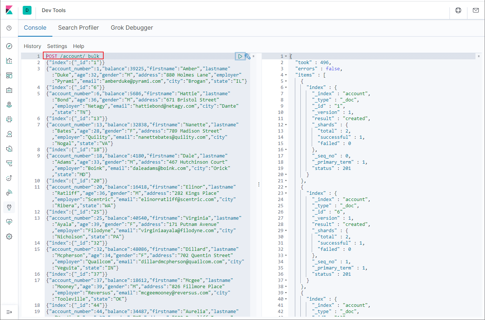
第一个SQL查询
我们使用SQL来查询下前10条记录，可以通过format参数控制返回结果的格式，txt表示文本格式，看起来更直观点，默认为json格式。
在Kibana的Console中输入如下命令：
POST /_sql?format=txt
{
"query": "SELECT account_number,address,age,balance FROM account LIMIT 10"
}
查询结果显示如下。
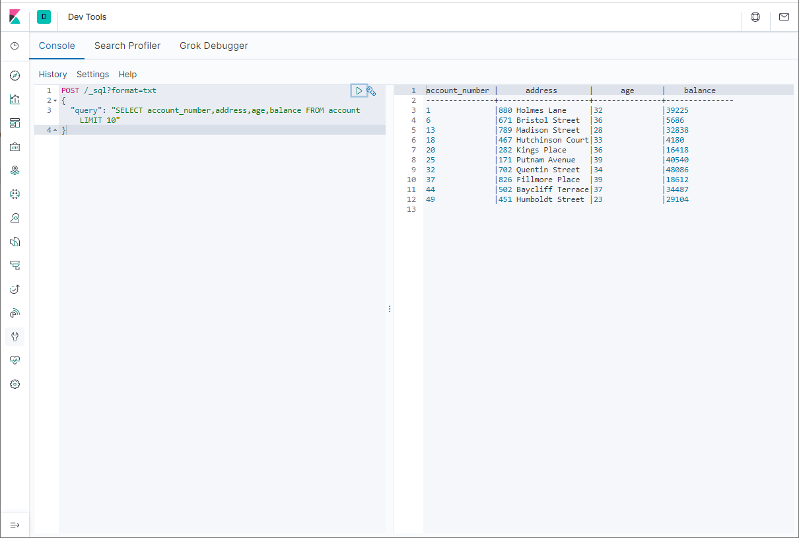
将SQL转化为DSL
当我们需要使用Query DSL时，也可以先使用SQL来查询，然后通过Translate API转换即可。
例如我们翻译以下查询语句：
POST /_sql/translate
{
"query": "SELECT account_number,address,age,balance FROM account WHERE age>32 LIMIT 10"
}
最终获取到Query DSL结果如下。

SQL和DSL混合使用
我们还可以将SQL和Query DSL混合使用，比如使用Query DSL来设置过滤条件。
例如查询age在30-35之间的记录，可以使用如下查询语句：
POST /_sql?format=txt
{
"query": "SELECT account_number,address,age,balance FROM account",
"filter": {
"range": {
"age": {
"gte" : 30,
"lte" : 35
}
}
},
"fetch_size": 10
}
查询结果展示如下：
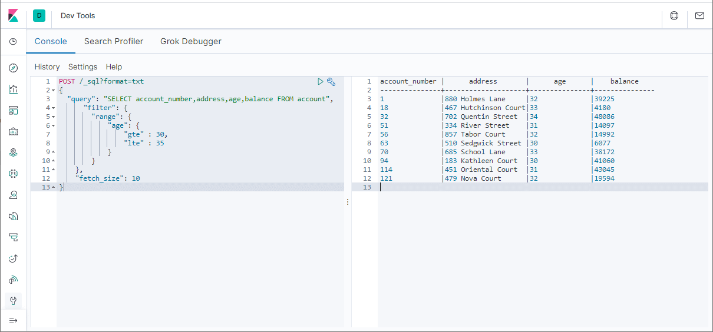
SQL和ES对应关系
| SQL | ES | 描述 |
|---|---|---|
| column | field | 数据库中表的字段与ES中的属性对应 |
| row | document | 数据库表中的行记录与ES中的文档对应 |
| table | index | 数据库中的表与ES中的索引对应 |
常用SQL操作
语法
在ES中使用SQL查询的语法与在数据库中使用基本一致，具体格式如下：
SELECT select_expr [, ...]
[ FROM table_name ]
[ WHERE condition ]
[ GROUP BY grouping_element [, ...] ]
[ HAVING condition]
[ ORDER BY expression [ ASC | DESC ] [, ...] ]
[ LIMIT [ count ] ]
[ PIVOT ( aggregation_expr FOR column IN ( value [ [ AS ] alias ] [, ...] ) ) ]
WHERE
可以使用WHERE语句设置查询条件，比如查询state字段为VA的记录，查询语句如下。
POST /_sql?format=txt
{
"query": "SELECT account_number,address,age,balance,state FROM account WHERE state='VA' LIMIT 10 "
}
查询结果展示如下：
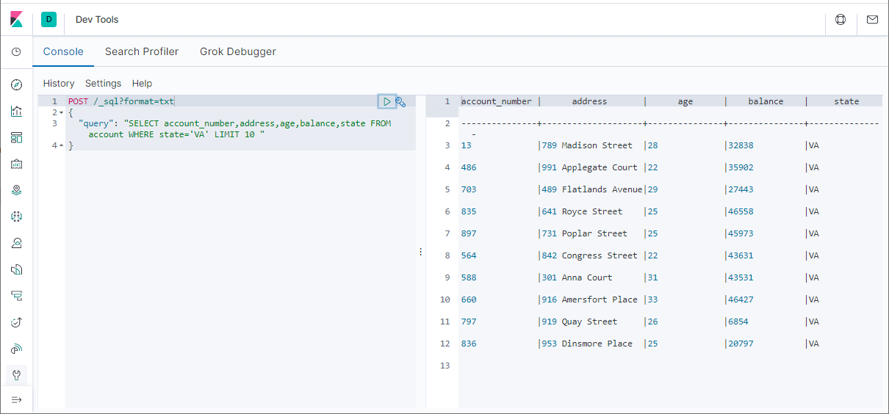
GROUP BY
我们可以使用GROUP BY语句对数据进行分组，统计出分组记录数量，最大age和平均balance等信息，查询语句如下。
POST /_sql?format=txt
{
"query": "SELECT state,COUNT(*),MAX(age),AVG(balance) FROM account GROUP BY state LIMIT 10"
}
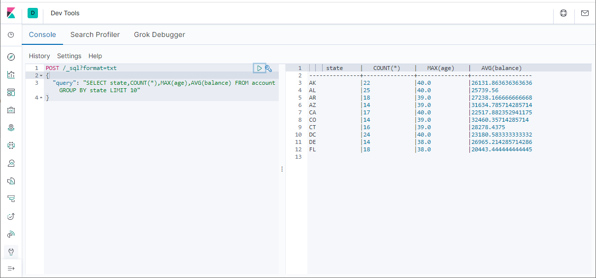
HAVING
我们可以使用HAVING语句对分组数据进行二次筛选，比如筛选分组记录数量大于15的信息，查询语句如下。
POST /_sql?format=txt
{
"query": "SELECT state,COUNT(*),MAX(age),AVG(balance) FROM account GROUP BY state HAVING COUNT(*)>15 LIMIT 10"
}
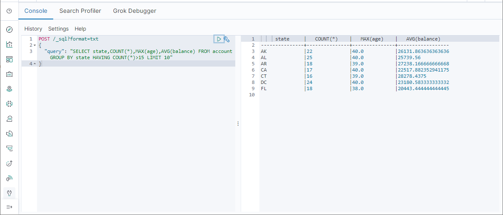
ORDER BY
我们可以使用ORDER BY语句对数据进行排序，比如按照balance字段从高到低排序，查询语句如下。
POST /_sql?format=txt
{
"query": "SELECT account_number,address,age,balance,state FROM account ORDER BY balance DESC LIMIT 10 "
}
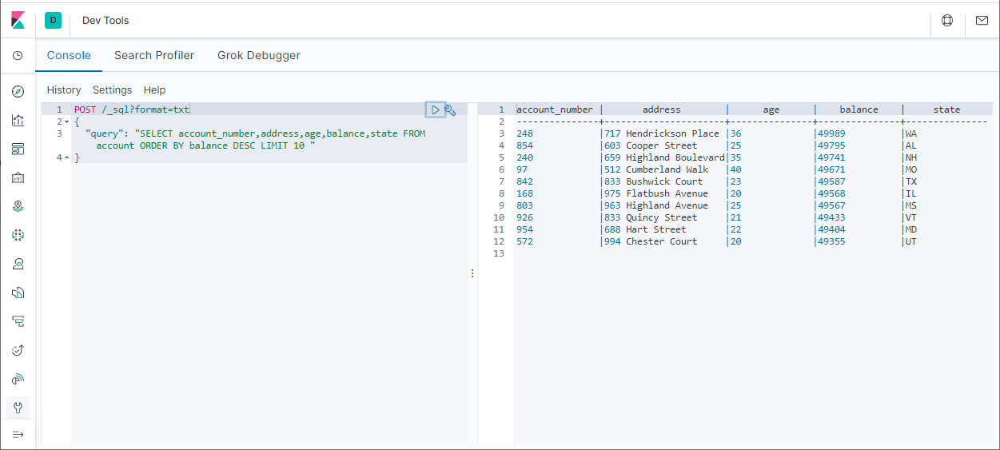
DESCRIBE
我们可以使用DESCRIBE语句查看表（ES中为索引）中有哪些字段，比如查看account表的字段，查询语句如下。
POST /_sql?format=txt
{
"query": "DESCRIBE account"
}
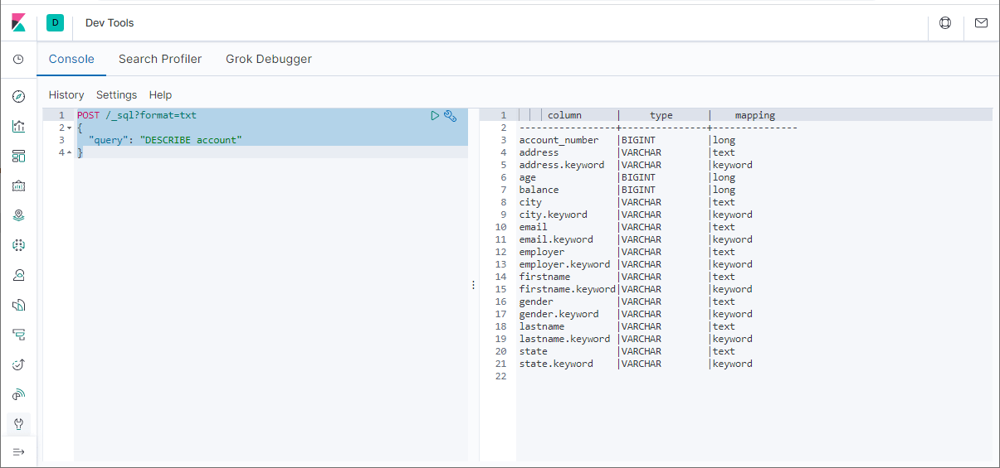
SHOW TABLES
我们可以使用SHOW TABLES查看所有的表（ES中为索引）。
POST /_sql?format=txt
{
"query": "SHOW TABLES"
}
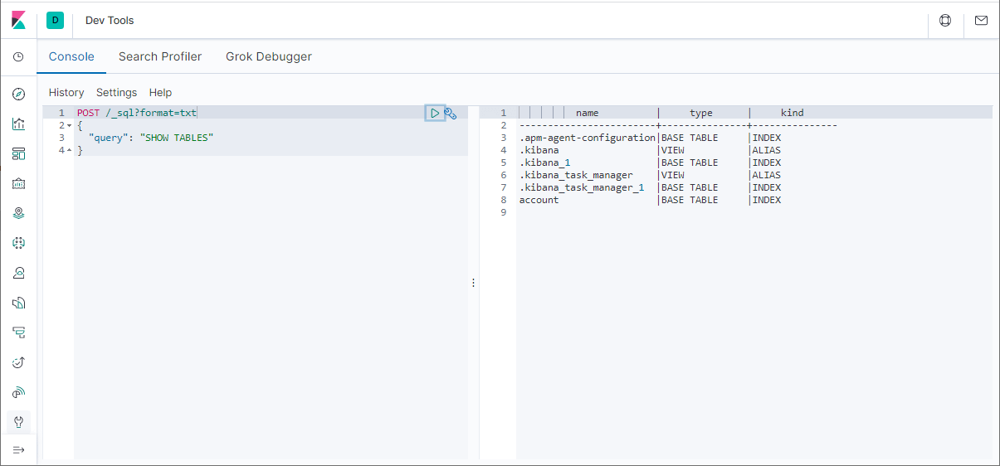
支持的函数
使用SQL查询ES中的数据，不仅可以使用一些SQL中的函数，还可以使用一些ES中特有的函数。
查询支持的函数
我们可以使用SHOW FUNCTIONS语句查看所有支持的函数，比如搜索所有带有DATE字段的函数可以使用如下语句。
POST /_sql?format=txt
{
"query": "SHOW FUNCTIONS LIKE '%DATE%'"
}
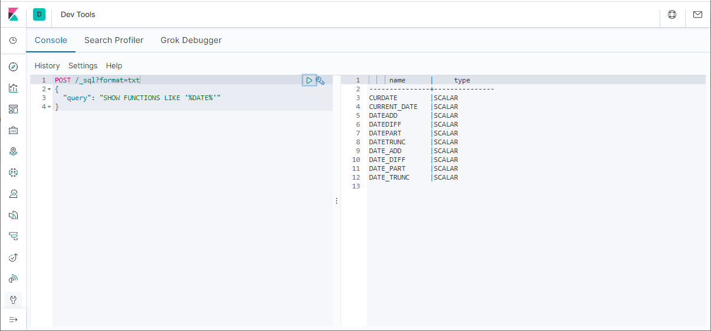
全文搜索函数
全文搜索函数是ES中特有的，当使用MATCH或QUERY函数时，会启用全文搜索功能，SCORE函数可以用来统计搜索评分。
MATCH()
使用MATCH函数查询address中包含Street的记录。
POST /_sql?format=txt
{
"query": "SELECT account_number,address,age,balance,SCORE() FROM account WHERE MATCH(address,'Street') LIMIT 10"
}
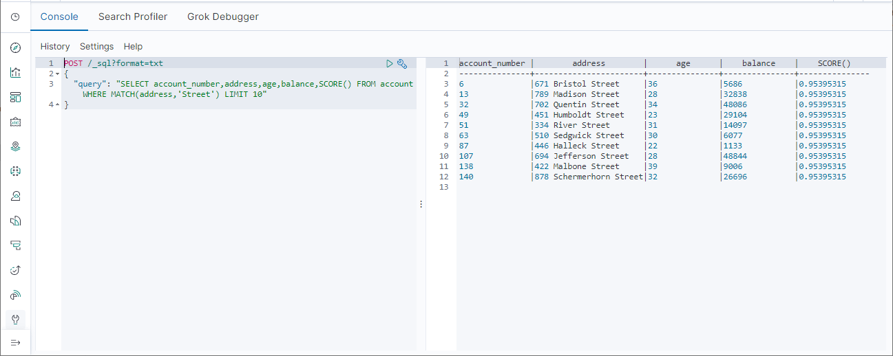
QUERY()
使用QUERY函数查询address中包含Street的记录。
POST /_sql?format=txt
{
"query": "SELECT account_number,address,age,balance,SCORE() FROM account WHERE QUERY('address:Street') LIMIT 10"
}
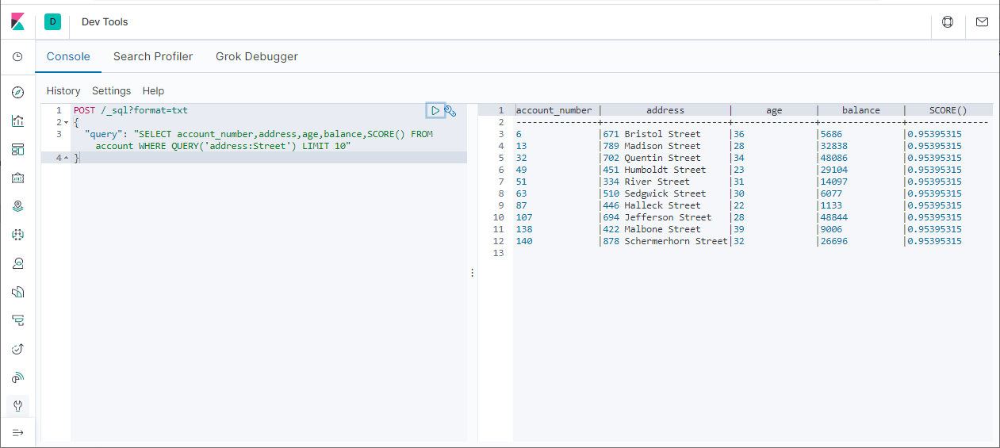
SQL CLI
如果你不想使用Kibana来使用ES SQL的话，也可以使用ES自带的SQL CLI来查询，该命令位于ES的bin目录下。
使用如下命令启动SQL CLI：
elasticsearch-sql-cli http://localhost:9200
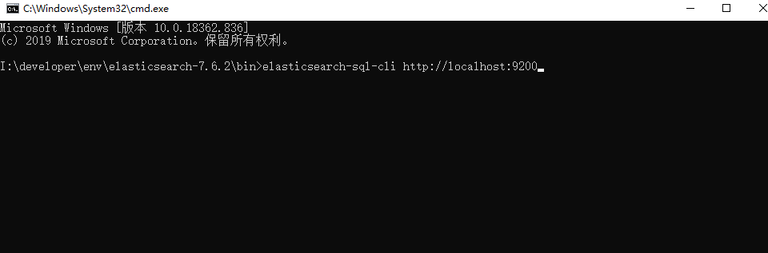
然后直接输入SQL命令即可查询了，注意要加分号。
SELECT account_number,address,age,balance FROM account LIMIT 10;
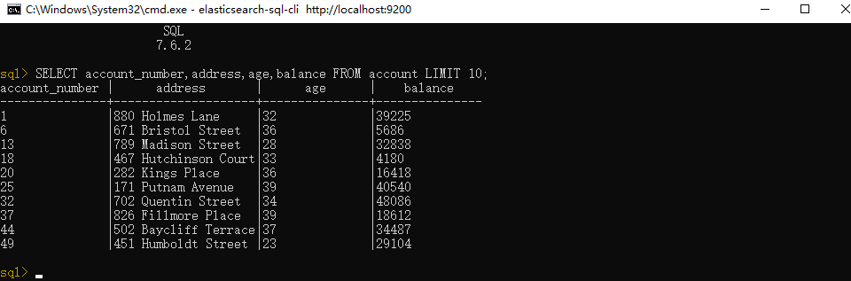
局限性
使用SQL查询ES有一定的局限性，没有原生的Query DSL那么强大，对于嵌套属性和某些函数的支持并不怎么好，但是平时用来查询下数据基本够用了。
参考资料
官方文档：https://www.elastic.co/guide/en/elasticsearch/reference/7.6/xpack-sql.html
公众号